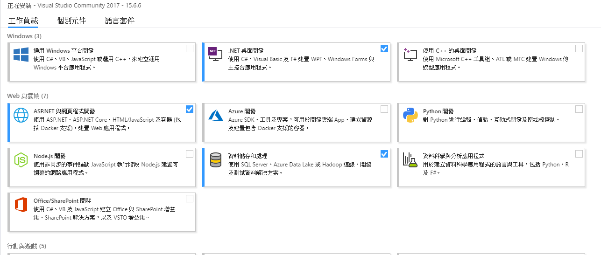
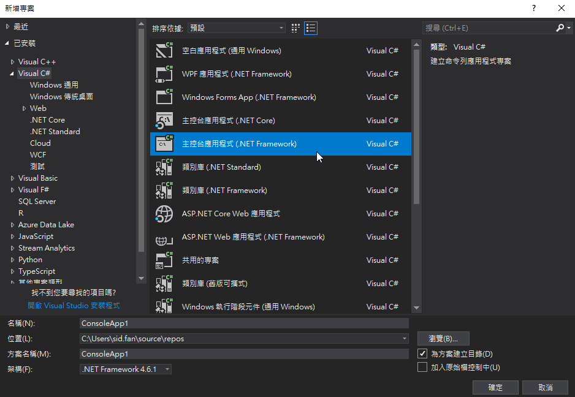
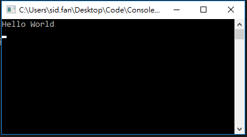

本教學以C#基礎語法教學為主搭配VS2017開發環境。
以下皆以console程式作範例，主要內容來自MSDN
控制台應用程式（console application）是一種設計用於純文字電腦介面的電腦程式
C#簡介
準備開發環境
安裝Visual Studio
安裝VisualStudio，Community 2017 版本即可
並且選擇要開發的項目來選擇安裝，全選會需要非常多的空間，沒有必要，基本上選擇.NET桌面開發、ASP.NET網頁開發(有要開發網頁的話)、資料儲存與處理、其他再視個人需求勾選。

開啟你的第一個專案 Hello World
開啟VS2017後左上角選單選擇 檔案 -> 新增 -> 專案，在專案選擇畫面左邊為Visual C#類別，右邊選擇主控台應用程式(.NET Framework)，下方為你的專案取個名字選擇存放資料夾按下確定

建立專案後右側為方案總管，是負責設定程式參數以及管理程式碼和參考的地方
在Program.cs的Main裡面寫上Hello world看看執行結果
static void Main(string[] args)
{
Console.WriteLine("Hello World");
Console.ReadLine(); //Pause
}

===========
程式結構
C# 程式包含一個或多個原始程式檔。 程式宣告型別，其中包含成員並可以依據命名空間分組。 類別和介面都是型別的範例。 欄位、方法、屬性及事件都是成員的範例。
在VS中每一個方案(solution)可以包含許多專案(project)，每一個專案包含許多的程式碼檔案以及資源，一個專案編譯完成為一個組件，組件基本為執行檔(exe)或程式庫(dll)。
通常較為大型的程式會由一個exe與許多dll組成，我們將軟體架構拆分為許多的dll再交由exe統整應用。
C# 語言的重要組織概念如下：程式、命名空間、型別、成員及組件。 C# 程式包含一個或多個原始程式檔。 程式宣告型別，其中包含成員並可以依據命名空間分組。 類別和介面都是型別的範例。 欄位、方法、屬性及事件都是成員的範例。
using System;
using System.Collections.Generic;
using System.Linq;
using System.Text;
using System.Threading.Tasks;
//參考 Reference
namespace ConsoleApp1 //命名空間 namespace
{
class Program //型別 class and interface
{
string _userName; //屬性 Property
public Program() //建構式 constructor
{
}
static void Main(string[] args) //方法 method
{
Console.WriteLine("Hello World");
Console.ReadLine();
}
}
}
參考: 程式參考哪些組件、類別
命名空間: 型別存在的命名空間，用來類別分組使用，ConsoleApp1.Program為範例類別完整名稱
型別: 宣告程式型別的類型，通常為類別(class)或介面(interface)
屬性: 為類別成員的一種，屬性是提供彈性機制以讀取、寫入或計算私用欄位值的成員
建構式: 每當建立類別或結構時，都會呼叫其建構函式。 類別或結構可有使用不同引數的多個建構函式。
方法: 方法是包含一系列陳述式的程式碼區塊。 程式會造成呼叫方法並指定任何所需的方法引數來執行陳述式。
==============
類型與變數
跳過
==============
運算式
「運算式」是由「運算元」和「運算子」建構而成。 運算式的運算子會指出要將哪些運算套用到運算元。 運算子範例包括 +、-、*、/ 及 new。 運算元範例包括常值、欄位、區域變數及運算式。
- 除了指派運算子之外，所有二元運算子都具有「左關聯性」，亦即會由左到右執行運算。 例如，x + y + z 會判斷值為 (x + y) + z。
- 指派運算子和條件運算子 (?:) 具有「右關聯性」，亦即會由右到左執行運算。 例如，x = y = z 會判斷值為 x = (y = z)。
Console.WriteLine($"1 + 2 = { 1 + 2 }"); //加法
Console.WriteLine($"2 - 1 = { 2 - 1 }"); //減法
Console.WriteLine($"2 * 3 = { 2 * 3 }"); //乘法
Console.WriteLine($"4 / 2 = { 4 / 2 }"); //除法
Console.WriteLine($"4 % 2 = { 4 % 2 }"); //餘數
Console.WriteLine();
Console.WriteLine($"1 + 2 = { 1 + 2 }"); //二元運算子順序從左到右
Console.WriteLine($"1 + 2 * 3= { 1 + 2 * 3}"); //* 運算子的優序高於 +
Console.WriteLine();
var x = 1; var y = 2; var z = 3;
Console.WriteLine($"x=1, y=2, z=3 x = y = z =>{x = y = z}" //指子從右到左
Console.WriteLine();
x = 1; y = 2; z = 2;
Console.WriteLine("關係和型別測試");
Console.WriteLine("x = 1; y = 2; z = 2");
Console.WriteLine($"x > y =>{x > y}"); //大於
Console.WriteLine($"x < y =>{x < y}"); //小於
Console.WriteLine($"y >= x =>{y >= x}"); //大於等於
Console.WriteLine($"y <= z =>{y <= z}"); //小於等於
Console.WriteLine($"x == y =>{x == y}"); //等於
Console.WriteLine($"x == y =>{x != y}"); //不等於
Console.WriteLine();
Console.WriteLine("x=1");
Console.WriteLine($"x++ =>{x++}"); //++為遞增 --為遞減 放在值後後置遞行順序為先執行程式後遞增
Console.WriteLine($"x =>{x}"); //執行完上一行的程式後 x遞增
Console.WriteLine($"++x =>{++x}"); //++放在值前面前置遞增，先進增才執行容
Console.WriteLine();
var a = true; var b = false;
Console.WriteLine("邏輯 條件");
Console.WriteLine(" a = true b = false");
Console.WriteLine($"!a => {!a}"); //邏輯否定 傳回相反邏輯
Console.WriteLine($"a && b => {a && b}"); //條件式 AND
Console.WriteLine($"a || b => {a || b}"); //條件式 OR
Console.ReadLine();
陳述式
程式的動作是藉由陳述式來表達。 C# 支援數種不同類型的陳述式，其中一些是以內嵌陳述式來定義。
「區塊」可允許在許可單一陳述式的內容中撰寫多個陳述式。 區塊是由在 { 與 } 分隔符號之間撰寫的陳述式清單所組成。
當變數宣告在區塊內就是區域變數，在區塊外的無法存取到區塊內的區域變數
var variable = "Variable";
{
var localVariable = "Local variable"; //區域變數
Console.WriteLine(variable);
Console.WriteLine(localVariable);
Console.WriteLine(variable);
Console.WriteLine(localVariable); //此行無法編譯localVariable被宣告在上面的區塊中，只有在那個區塊中可以使用
Console.ReadLine();
if 陳述式
if 陳述式會根據運算式的 Boolean 值識別要執行的陳述式。
var count = 0;
if (count == 0) //如果條件成立程式會進入下面區塊，並且跳過其他判斷條件
{
Console.WriteLine("count = 0");
}
else if (count == 1) //上述條件都不成立，到此判斷條件是否成立
Console.WriteLine("count = 1");
}
else //所有條件都不成立
{
Console.WriteLine("other");
}
switch 陳述式
switch 是一個選取範圍陳述式，可根據使用「比對運算式」的模式比對，從候選項清單中選擇要執行的單一「參數區段」。
在 C# 6 中，比對運算式必須是傳回下列類型之值的運算式︰
- char。
- string。
- bool。
- 整數值，例如 int 或 long。
- enum 值。
從 C# 7 開始，比對運算式可以是任何非 Null 運算式。
常數模式
常數模式會測試比對運算式是否等於指定的常數。
switch (DateTime.Now.DayOfWeek) //switch放入變數作為判斷條件
{
case DayOfWeek.Sunday: //當DateTime.Now.DayOfWeek為星期天
case DayOfWeek.Saturday: //星期六，可將多個條件同時寫在一起
Console.WriteLine("The weekend");
break; //陳述式結束
case DayOfWeek.Monday:
Console.WriteLine("The first day of the work week.");
break;
case DayOfWeek.Friday:
Console.WriteLine("The last day of the work week.");
break;
default: //不在上面的條件中會執行此段，也可以省略不寫，基本上類if陳述式中的else區塊
Console.WriteLine("The middle of the work week.");
break;
Console.ReadLine();
類型模式
類型模式會啟用精簡類型評估和轉換。 與 switch 陳述式搭配使用來執行模式比對時，會測試運算式是否可轉換成指定的類型；如果可以的話，則會將它轉換成該類型的變數。
static void Main(string[] args)
{
int[] values = { 2, 4, 6, 8, 10 };
ShowCollectionInformation(values);
var names = new List<string>();
names.AddRange(new string[] { "Adam", "Abigail", "Bertrand","Bridgette" });
ShowCollectionInformation(names);
List<int> numbers = null;
ShowCollectionInformation(numbers);
Console.ReadLine();
}
private static void ShowCollectionInformation(object coll)
{
switch (coll)
{
case Array arr: //判斷object是否為Array類型
Console.WriteLine($"An array with {arr.Length}elements.");
break;
case IEnumerable<int> ieInt:
Console.WriteLine($"Average: {ieInt.Average(s => s)}";
break;
case IList list:
Console.WriteLine($"{list.Count} items");
break;
case IEnumerable ie:
string result = "";
foreach (var item in ie)
result += "${e} ";
Console.WriteLine(result);
break;
case null:
// Do nothing for a null.
break;
default:
Console.WriteLine($"A instance of type {coll.GetType(.Name}");
break;
}
}
while 陳述式
while 陳述式會執行陳述式或陳述式區塊，直到指定的運算式評估為 false 為止。
int n = 1;
while (n < 6) //當條件不成立時才會離開while區塊，所以使用時要小心造成無限迴圈
{
Console.WriteLine("Current value of n is {0}", n);
n++; //當沒有此行程式碼時，會形成無限迴圈的情況，永遠重複此區塊程式碼
}
Console.ReadLine();
do 陳述式
類似while陳述式，但會先執行do區塊內的程式碼才進行while判斷
int n = 10;
do //會先執行此區塊內容才進行下面while判斷
{
Console.WriteLine(n);
} while (n<5);
Console.ReadLine();
for 陳述式
透過 for 迴圈，您可以重複執行陳述式或陳述式區塊，直到指定的運算式評估為 false 為止。 這種迴圈對於逐一查看陣列很有用，也適用於您事先知道迴圈要反覆運算幾次的其他應用。
//for (initializer; condition; iterator)
//for結構為 初始值;條件判斷;迭代器區段
int limit = 10;
for (int i = 0; i < limit; i++)
{
Console.WriteLine(i);
}
Console.ReadLine();
foreach 陳述式
foreach 陳述式會為陣列或物件集合中每個實作 System.Collections.IEnumerable 或 System.Collections.Generic.IEnumerable
var users = new List<string>() { "A", "B", "C" };
foreach (string s in users)
{
Console.WriteLine(s);
}
Console.ReadLine();
break 陳述式
break 陳述式會終止其所在的最接近封閉式迴圈或 switch 陳述式。
while (true)
{
Console.WriteLine("Test");
break; //執行到此行直接終止並且離開此區塊
}
Console.ReadLine();
continue 陳述式
continue 陳述式會將控制權轉移給其所在的封閉式 while、do、for 或 foreach 陳述式的下一個反覆項目。
for (int i = 1; i <= 10; i++)
{
if (i < 9)
{
continue; //執行到此終止並且進到下一此迴圈
}
Console.WriteLine(i);
}
Console.ReadLine();
throw 陳述式和 try 陳述式
try-catch 陳述式包含 try 區塊後面接著一個或多個 catch 子句，指定不同例外狀況的處理常式。
static void ProcessString(string s)
{
if (s == null)
{
throw new ArgumentNullException(); //拋出ArgumentNullException
}
}
static void Main()
{
try
{
string s = null;
ProcessString(s);
}
// Most specific:
catch (ArgumentNullException e) //擷取ArgumentNullException例外
{
Console.WriteLine("{0} First exception caught.", e);
}
// Least specific:
catch (Exception e) //擷取所有例外
{
Console.WriteLine("{0} Second exception caught.", e);
}
finally //try catch結束後會執行
{
//常見的搭配使用 catch 與 finally 是要取得和使用 try 區塊中的資源、處理 catch 區塊中的例外情況，以及釋放 finally 區塊中的資源。
//do something....
}
}
using 陳述式
提供方便的語法，以確保正確使用 IDisposable 物件。
//using 結束後會釋放TextWriter資源
using (TextWriter w = File.CreateText("test.txt"))
{
w.WriteLine("Line one");
w.WriteLine("Line two");
w.WriteLine("Line three");
}
goto 陳述式
goto 陳述式會將程式控制權直接轉移到標記陳述式。
goto 的一個常見用法是將控制權轉移到特定的切換案例標籤，或 switch 陳述式中的預設標籤。
goto 陳述式也適用於跳出深度巢狀的迴圈。
int i = 0;
goto check;
loop:
Console.WriteLine(args[i++]);
check:
if (i < args.Length)
goto loop;
以下功用較複雜，先跳過